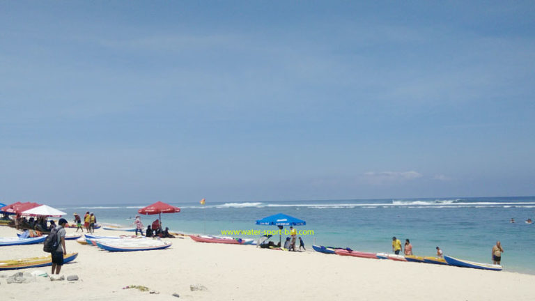

Pantai Pandawa Bali
Pantai ini di beri nama pantai Pandawa karena pada tebing karang menuju akses masuk ke area pantai, terdapat patung dari panca Pandawa.

Tanah Lot
Daya tarik utama dari Tanah Lot temple terdapat pada keindahan pemandangan matahari terbenam, dengan siluet pura Tanah Lot

Pura Ulun Danu Beratan Bedugul
Pura Ulun Danu, lokasinya berada di tepi danau Beratan berada di kawasan wisata Bedugul.